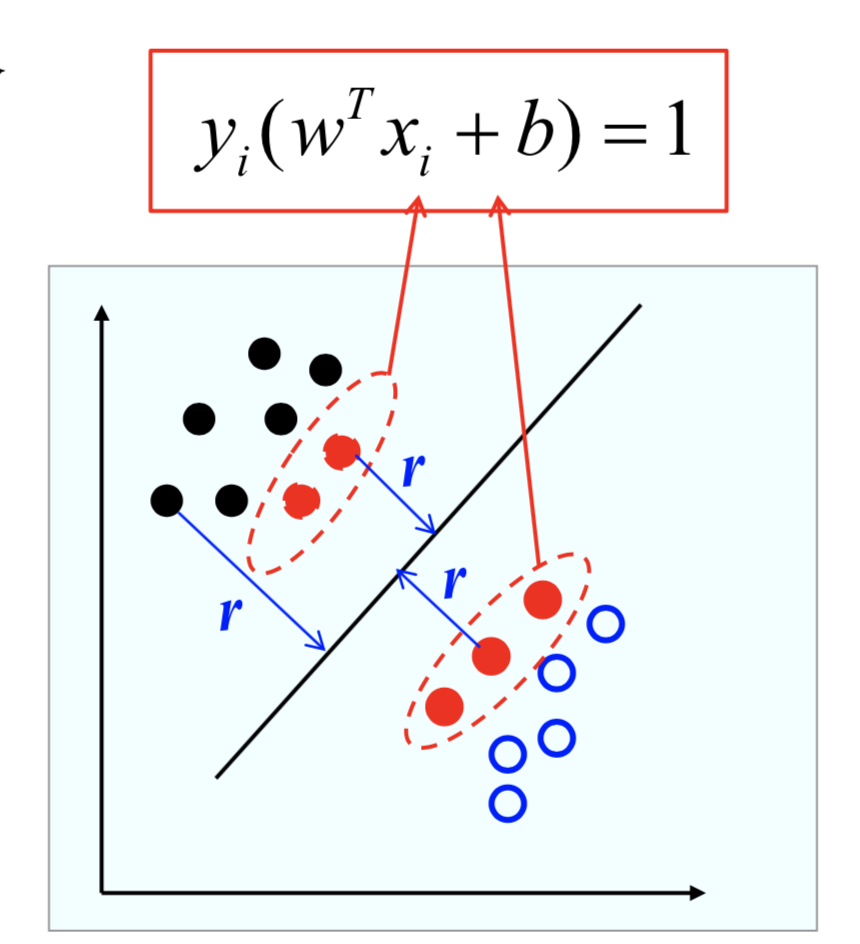

SVM是什么？
SVM英文名叫做Support Vector Machine（SVM），翻译过来就是支持向量机，定义是最大间隔分类器，SVM用于分类问题。至于什么是支持向量，相信读者在之后的阅读后就会明白了。在本文只给读者一些SVM的最基本的认知，SVM的训练算法本文暂不讨论。
历史
SVM最初发表在1992年和1995年，当时处于人工神经网络的第二次热潮，SVM并没用被重视。当时发表出来也是蹭了神经网络的热度，文章名叫做《Support Vector Networks》。但是在发表之后，SVM开始崭露头角。逐渐成为分类的首选工具。SVM由于核函数的引入，适应能力极强。虽然现在神经网络中分类为了省事几乎用的都是一层全连接+softmax。但是谁又能保证SVM不会再东山再起呢？
特点
- SVM属于参数形式已知的判别函数，但是具体的参数值未知。
- 训练过程，根据带标签的样本，利用最优化方法去求解判别函数的参数值。
- 验证和测试过程，根据学习到的判别函数对其进行分类
同时SVM是以线性判别函数为基础的方法，即我们可以写为下面的形式：。注意参数$w$是一个向量，其维度和输入$x$的特征维度相同。
根据数据的给定的线性可分情况，我们可以得到SVM的下面三种形式：
- 线性可分支持向量机（硬间隔）
- 线性支持向量机（软间隔）
- 非线性支持向量机（核方法）
其中，线性可分表示的是存在一个线性判别函数能完全将给定样本分类正确。同时硬间隔和软间隔的区别将会在文章后面解释。核方法暂不做探讨。
原理
直觉
我们考虑二分类的场景，如下图所示：
我们为了对这两种类别进行分类，实际上我们可以作出来无数条线性$f(x;w,b)=sign(w^Tx+b)$的形式的分类面（为什么？？）。我们只选择其中代表性的三条$h_1,h_2,h_3$作展示。首先我们可以明确一点，有的分类面的泛化效果相比其他分类面效果会更好，直观上$h_2$处于正中间，泛化效果在直觉上应该会比$h_1,h_3$更好。但是$h_2$是这无数个分类面中最好的吗？？
函数间隔
一般来说，一个点到分类面的远近可以表示为分类的精确程度，即在超平面$w^Tx+b$确定的情况下，$w^Tx+b$能表示点$x$距离平面的距离，绝对值越大，说明确信度越高。我们可以假设正类为标签为1，负类标签为-1，即$y \in \{1,-1\}$。这样的话，我们可以用$y(w^T+b)$表示分类的正确性和确信度。因为当$x$为正类的话，$(w^Tx+b)$为正数，与$y=1$乘积仍为正数。因为当$x$为负类的话，$(w^Tx+b)$为负数，与$y=-1$乘积仍为正数。等于说，我们希望所有的$y_i(w^Tx_i+b)$都大于0，这样的话，就是线性可分的，全部分类正确。同时$\min(y_i(w^Tx_i+b))$尽量大，这样的话，表示的是分类的间隔最大。同时函数间隔可以表示为：
几何间隔
函数间隔可以表示为分类预测的正确性，但是直接使用函数距离作为SVM的标准的话存在一定缺陷，因为超平面$w^Tx+b$在训练过程中是不确定的，换句话说，我们可以等比例的放大$w,b$为$k\cdot w,k\cdot b$，由于是等比例的，超平面并不会改变。但是函数间隔大小却可以根据比例$k$进行放大或缩小。为了解决这个问题，SVM为了更好的衡量不同超平面的效果，提出了几何间隔：
计算的方法也很简单，就是除以当前超平面的模长即可，因为模长是根据$k$成比例的变化的，除以模长相当于进行了一个抵消$k$的作用。
线性可分的情况下
线性可分SVM分类器，就是想在这无数种线性可分的分类面中把最好的那个超平面找出来。其采用的标准是最终的分类面和样本的距离最大，也就是几何间隔最大。优点主要体现在下面两个部分
- 对训练样本局部扰动的”容忍性最好”。
- 对未见样本的泛化能力最强。
上图显示了分类间隔有可能是两条黑色的虚线，也有可能是两条红色虚线。根据最大间隔理论，我们认为黑色的虚线间隔更大，分类效果更好。这里为什么是$w^Tx+b=1$后面会有解释。
下图表示的是大间隔的分类面稳定性要在各方面都更加稳定。
对于线性可分的数据集来说，必然存在超平面$(w,b)$。
对于正样本有$w^Tx_i+b>0$，对于负样本有$w^Tx_i+b<0$成立。
但是我们可以进行一定的放大得到下面的等式：
对于正样本有$w^Tx_i+b>=1$，对于负样本有$w^Tx_i+b<=-1$成立。
与此同时我们可以得到下面的分类面：
这时候我们可以看到，有一些点距离分类面较远，有一些点距离分类面较近。其中红色的这些点距离分类面最近，这些点会使得$y_i(w^Tx_i+b)=1$成立。这些使等式成立的点我们就称作支持向量，在所有样本中，支持向量到分类面的几何距离最小。这个距离就被称作是间隔。这个间隔可以记作下面的形式：
我们的任务就是使间隔$r$最大，等价于最大化$\frac {1} {||w||}$，为了方便求导，我们可以发现最大化$\frac {1} {||w||}$等价于最小化$\frac 1 2 ||w||^2$。于是我们所需要求解的就是下面的线性规划形式：
为了优化这个线性规划形式，需要用到拉格朗日对偶性。感兴趣的可以自己继续阅读凸二次规划问题的序列最小最优化算法（SMO）的资料。本文暂不做探讨。
线性不可分的情况下
其实线性可分一般都是理想的情况，而现实往往都是线性不可分的。为了得到更一般的解。我们应该允许SVM容忍一些错分样本。上一部分所介绍的SVM因为不允许出现错分样本，故也叫硬间隔SVM。而这里允许出现错分样本，也被称作软间隔SVM。例如下面这个例子：
对应上面的情况来说，我们需要让SVM容忍一些错误样本才能进行较好的分类。于是我们需要求改一下我们的判别函数：
相当于说我们可以适当的放松一些限制,但是我们也不能过分放松这个限制：
应该把上面的这一部分作为一个正则化项加入到损失函数中，于是我们有下面的线性规划形式：
其中损失函数中第一项表示的是几何间隔一个尽量的大，$C$表示的是正则化系数，第二项整体表示的是让错分样本尽量的少，约束尽量的紧。
不过软间隔的SVM的判别函数，依然是下面的形式，这点和硬间隔SVM没有区别。
注意，$C$值是一个我们需要手动设置的参数，往往需要根据任务和数据集的特点进行多次尝试。下图可以看到不同的$C$值对分类面的影响：
求解上面的线性规划形式，我们也需要使用拉格朗日对偶性求解。本文不做讨论。
核函数方法
通过上面的讨论，我们可以知道SVM的分类效果是很有局限性的，碰到无法线性分类的数据集，几乎是无法使用，例如下面的例子：
在这种情况下，SVM如何使用？？事实是我们上面讨论的两种方法都不再适用了。因为这根本就不是线性可分的。
为了解决这个问题，我们引入一个非线性变换，想法也是很简单，我们希望给样本点做一个映射，使得样本点能够线性分类。例如上面的例子：
我们通过一个非线性变化，让样本点的映射到一个新的空间，之后我们在新空间使用SVM进行分类。
这就是核函数方法的基本思想：通过非线性映射将数据映射到新的数据空间，之后我们在新的数据空间使用SVM进行线性分类。
而这个非线性变换，我们需要观察数据集的分布，需要自己手动构造一个非线性变换，这就是让人头疼的地方。。。。数据维度很高的话，我们几乎无法想象数据集的分布情况。手动构造非线性变换更是天方夜谭。不过得益于前人的工作，这个非线性变化是可以自己学出来的，但是我们需要在SMO算法中自己定义核函数(因为线性可分的情况下对偶问题的求解仅仅于特征空间中样本的内积有关)，本文暂不讨论这些。目前只给出一个硬间隔的核函数方法的基本形式：
总结
到此为止，我们讨论了SVM在三种不同的场景下，SVM所面临的问题和解决办法。但是本文只做了一些直观上的理解，并没有详细介绍SVM参数的具体学习方法。 具体的推导过程可以去看一下李航的统计学习方法，上面有非常详细的解释。
国际惯例
向世明，模式识别导论课件
李航，统计学习方法